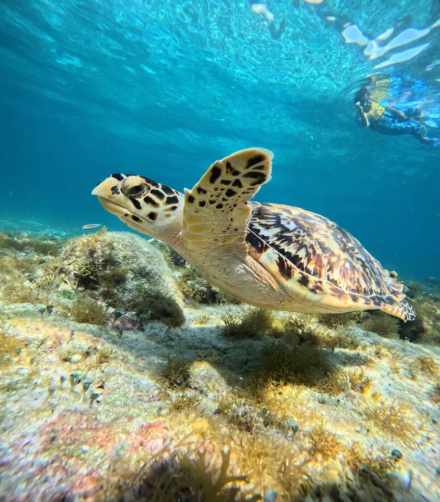

爬行动物 · 动物界
玳瑁 Eretmochelys imbricata

背甲呈覆瓦状排列、花纹华丽的海龟，以珊瑚礁海绵为主食，因甲片贸易与误捕而成为极危物种，也是珊瑚礁生态的关键成员。
- 分类
- 门脊索动物门纲爬行纲目龟鳖目科海龟科属玳瑁属
- 栖息环境
- 热带与亚热带的珊瑚礁、海草床和浅海大陆架
- 地理分布
- 全球热带与亚热带海域，中国南海、东海及台湾沿海有分布
- 保护级别
- IUCN 极危（CR）；中国国家一级保护动物；CITES 附录 I
物种志
玳瑁体长 60–100 厘米，体重 45–70 千克，背甲呈心形，十三块盾片像瓦片一样层层相叠，甲面有琥珀色与黑褐色交织的放射状花纹，边缘呈锯齿状；吻部尖而侧扁，形似鹰嘴，四肢呈桨状，适于游泳。
它分布于全球热带和亚热带海域，栖息于珊瑚礁、海草床和大陆架浅海，是少数能取食海绵的海龟，海绵占其食物的大部分，也吃水母、海葵和软体动物，对维持珊瑚礁生态平衡有重要作用。雌龟每 2–3 年产卵一次，每窝约 100–200 枚，孵化期 50–70 天，幼龟出壳后自行入海。由于玳瑁甲片被制成工艺品、龟卵被捡食以及渔网误捕，其种群数量急剧下降，被列为极危物种，国际贸易已被禁止。
形态与习性
- 食性以海绵为主，也吃水母、海葵和软体动物
- 体长背甲长 60–100 cm
- 体重约 45–70 kg
- 寿命约 30–50 年
- 繁殖卵生，每窝 100–200 枚，孵化期 50–70 天
- 活动节律昼行性，善于在珊瑚礁间潜水觅食
- 威胁甲片贸易、渔网误捕和产卵沙滩开发
趣味知识
- 玳瑁是少数以海绵为主食的动物，能消化含硅质骨针的海绵。
- 它的背甲花纹独一无二，曾因“十三鳞”之名被大量制成工艺品。
- 玳瑁后代的性别由巢温决定，温度偏高时孵出的雌性更多。